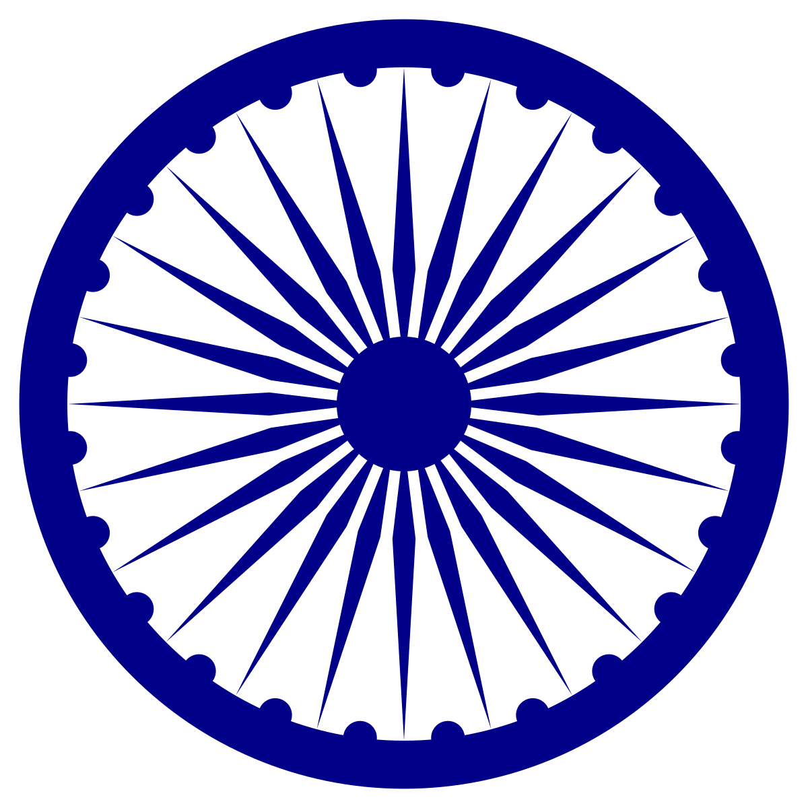

INDIA

PARAGUAY (front) |
PARAGUAY (back) |
The National Flag of India (Hindi: Tiraṅgā)is a horizontal rectangular tricolour of India saffron, white and India green; with the Ashoka Chakra, a 24-spoke wheel, in navy blue at its centre.
The National Flag of Paraguay a red–white–blue triband, was inspired by the colours of the French Tricolour, believed to signify independence and liberty.
The flag is unusual because it differs on its obverse and reverse sides:
the obverse of the flag shows the national coat of arms, and the reverse shows the seal of the treasury.